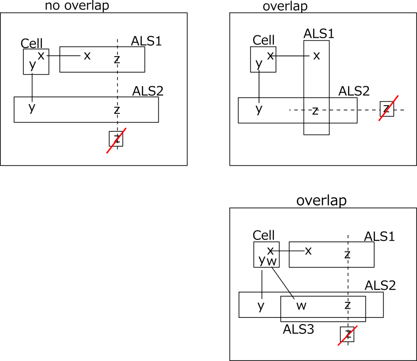

ALS DeathBlossom(basic)
⇒ ALS Death Blossom(Enhanced)
DeathBlossom is an analysis algorithm based on the arrangement of ALS with a mysterious name.
Show image of DeathBlossom
A cell(axis cell) has n candidate digits(x, y,...),
and each digit is connected with n ALSs and a strong link(RCC between cells and ALS).
Also assume that n ALSs have a common digit z different from RCC.
At this time, if z is outside the ALS and this covers all z in ALS, z outside ALS can be excluded.
If the digit z outside the ALS is true,
then all the ALSs become LockedSet and the candidate digits of the axis cells disappear.
ALS has no overlap (left figure) and overlap allowance (right figure).

○ALS DeathBlossom sample:
 ALS Death Blossom
ALS Death BlossomStem : r2c3 #69
-#6-ALS1 : r27c7 #567
-#9-ALS2 : r12368c2 #345679
eliminated : r7c2 #7
 ALS Death Blossom [overlap]
ALS Death Blossom [overlap]Stem : r1c7 #37
-#7-ALS1 : r2c459 #1347
-#3-ALS2 : r234c9 #1347
eliminated : r4c5 #4
...8...4....21...7...7.5981315..9..8.8....4....41.83.5..1.82.646.8...1...236.18..
..2956.485.6....9.4...7.5...538...1.2.......6.1...582...1.8...2.9....1.582.4316..